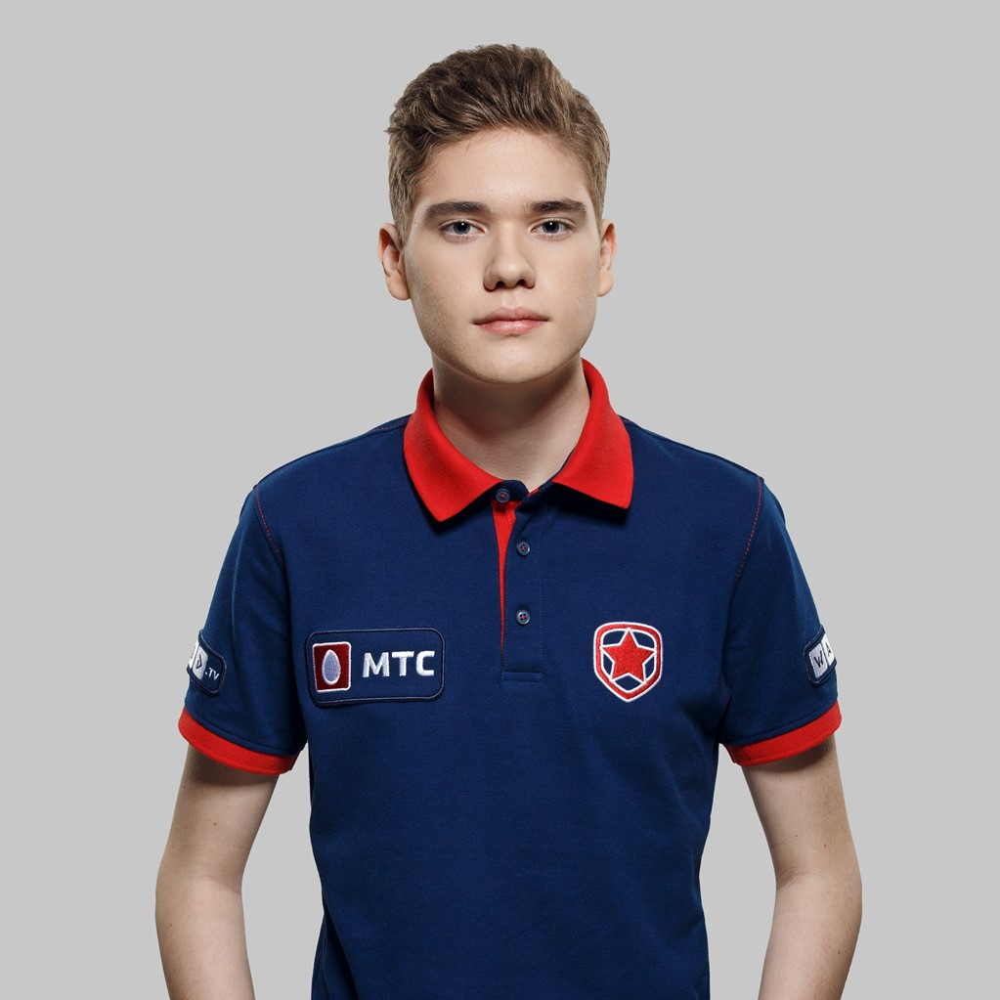
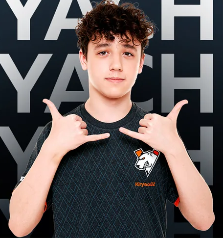

Турниры в Fortnite
Все о Турнирах
В Fortnite каждый сезон проходит множество турниров, поэтому Fortnite популярная игра тем, что люди которые играют на профессиональном уровне, они могут показать свое мастерство и получить за это вознагрождение.
Есть разные виды турниров в которых можно поучаствовать:
- На денежные призы — этот формат турниров понятен по названию, но чтобы выиграть нужно быть очень профессиональным игроком, ведь мест чтобы занять призовое место очень мало.
- На внутренние призы — в этот формат турниров более легче, чем денежные, в нем можно выиграть только скины.
- Испытательный Турнир — такие турниры проходят без каких либо призов, они проводятся чтобы увидить ошибки в турнирах или испытать новые функции.
- FNKS Турниры — такие турниры так же как и денежные призы, но призовой фонд больше, такой турнир проходит каждый сезон, сам турнир проходит несколько дней, так как в таком турнире проходит много отборов и до финала доходят 50 команд.
Все турниры проходят в разном формате, по типу:
Одиночки
Дуо
Трио
Командами
СНГ Победители FNKS
В 2021 с 4 по 5 сентября проходил финал FNKS турнира. В нем победило СНГ трио:

Илья Чернышов (Toose)

Кирилл Гришин (Kiryache32)

Никита Кулак (Stormyrite)
Это было первое трио игроков которое продвинуло СНГ комьюнити Fortnite к новым вершинам.